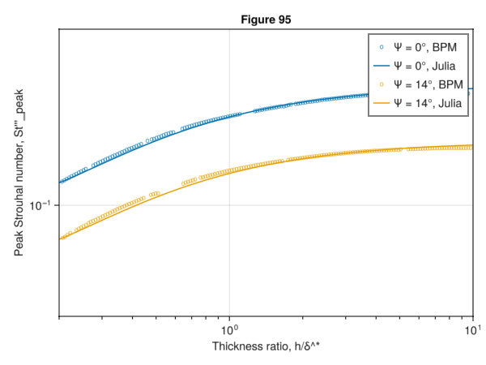

Software Quality Assurance, Cont.
Brooks, Pope, and Marcolini Airfoil Self-Noise Tests, Cont.
Laminar Boundary Layer-Vortex Shedding Tests
using AcousticAnalogies: AcousticAnalogies
using ColorSchemes: colorschemes
using DelimitedFiles: DelimitedFiles
# using FLOWMath: linear
using GLMakie
# https://docs.makie.org/stable/examples/blocks/axis/index.html#logticks
struct IntegerTicks end
Makie.get_tickvalues(::IntegerTicks, vmin, vmax) = ceil(Int, vmin) : floor(Int, vmax)
colors = colorschemes[:tab10]
fig = Figure()
ax1 = fig[1, 1] = Axis(fig; xlabel="Re_c", ylabel="Peak Strouhal number, St'_peak",
xscale=log10,
xminorticksvisible=true,
xminorticks=IntervalsBetween(9),
xticks=LogTicks(IntegerTicks()),
yscale=log10,
yminorticksvisible=true,
yminorticks=IntervalsBetween(9),
yticks=LogTicks(IntegerTicks()))
fname = joinpath(@__DIR__, "..", "..", "test", "bpm_data", "brooks_airfoil_self_noise_and_prediction_1989", "19890016302-figure86-St_1_prime.csv")
bpm = DelimitedFiles.readdlm(fname, ',')
Re_c_bpm = bpm[:, 1]
St_1_prime_bpm = bpm[:, 2]
scatter!(ax1, Re_c_bpm, St_1_prime_bpm, color=colors[1], markersize=4, label="BPM")
Re_c_jl = 10.0.^(range(4, 7; length=100))
St_1_prime_jl = AcousticAnalogies.St_1_prime.(Re_c_jl)
lines!(ax1, Re_c_jl, St_1_prime_jl, color=colors[1], label="Julia")
xlims!(ax1, 1e4, 1e7)
ylims!(ax1, 0.01, 1)
axislegend(ax1, position=:lt)
save("19890016302-figure86.png", fig)using AcousticAnalogies: AcousticAnalogies
using ColorSchemes: colorschemes
using DelimitedFiles: DelimitedFiles
# using FLOWMath: linear
using GLMakie
# https://docs.makie.org/stable/examples/blocks/axis/index.html#logticks
struct IntegerTicks end
Makie.get_tickvalues(::IntegerTicks, vmin, vmax) = ceil(Int, vmin) : floor(Int, vmax)
colors = colorschemes[:tab10]
fig = Figure()
ax1 = fig[1, 1] = Axis(fig; xlabel="St'/St'_peak", ylabel="Function G_1 level, dB",
xscale=log10,
xminorticksvisible=true,
xminorticks=IntervalsBetween(9),
xticks=LogTicks(IntegerTicks()))
fname = joinpath(@__DIR__, "..", "..", "test", "bpm_data", "brooks_airfoil_self_noise_and_prediction_1989", "19890016302-figure85-G1.csv")
bpm = DelimitedFiles.readdlm(fname, ',')
e_bpm = bpm[:, 1]
G1_bpm = bpm[:, 2]
scatter!(ax1, e_bpm, G1_bpm, color=colors[1], markersize=4, label="BPM")
e_jl = 10.0.^(range(-1, 1; length=101))
G1_jl = AcousticAnalogies.G1.(e_jl)
lines!(ax1, e_jl, G1_jl, color=colors[1], label="Julia")
xlims!(ax1, 0.1, 10)
ylims!(ax1, -30, 0)
axislegend(ax1, position=:lt)
save("19890016302-figure85.png", fig)using AcousticAnalogies: AcousticAnalogies
using ColorSchemes: colorschemes
using DelimitedFiles: DelimitedFiles
# using FLOWMath: linear
using GLMakie
# https://docs.makie.org/stable/examples/blocks/axis/index.html#logticks
struct IntegerTicks end
Makie.get_tickvalues(::IntegerTicks, vmin, vmax) = ceil(Int, vmin) : floor(Int, vmax)
colors = colorschemes[:tab10]
fig = Figure()
ax1 = fig[1, 1] = Axis(fig; xlabel="alpha^*, deg", ylabel="St'_peak/St'_1",
yscale=log10,
yminorticksvisible=true,
yminorticks=IntervalsBetween(9),
yticks=LogTicks(IntegerTicks()))
fname = joinpath(@__DIR__, "..", "..", "test", "bpm_data", "brooks_airfoil_self_noise_and_prediction_1989", "19890016302-figure87.csv")
bpm = DelimitedFiles.readdlm(fname, ',')
alphastar_bpm = bpm[:, 1]
St_peak_ratio_bpm = bpm[:, 2]
scatter!(ax1, alphastar_bpm, St_peak_ratio_bpm, color=colors[1], markersize=4, label="BPM")
St_1_prime = 0.25 # Just make up a value, since we're multiplying and then dividing by it anyway.
alphastar_jl = range(0.0*pi/180, 7.0*pi/180; length=21)
St_peak_ratio_jl = AcousticAnalogies.St_peak_prime.(St_1_prime, alphastar_jl)./St_1_prime
lines!(ax1, alphastar_jl.*180/pi, St_peak_ratio_jl, color=colors[1], label="Julia")
xlims!(ax1, 0, 7)
ylims!(ax1, 0.5, 2)
axislegend(ax1, position=:lt)
save("19890016302-figure87.png", fig)using AcousticAnalogies: AcousticAnalogies
using ColorSchemes: colorschemes
using DelimitedFiles: DelimitedFiles
# using FLOWMath: linear
using GLMakie
# https://docs.makie.org/stable/examples/blocks/axis/index.html#logticks
struct IntegerTicks end
Makie.get_tickvalues(::IntegerTicks, vmin, vmax) = ceil(Int, vmin) : floor(Int, vmax)
colors = colorschemes[:tab10]
fig = Figure()
ax1 = fig[1, 1] = Axis(fig; xlabel="Re_c/Re_c0", ylabel="G2 + G3",
xscale=log10,
xminorticksvisible=true,
xminorticks=IntervalsBetween(9),
xticks=LogTicks(IntegerTicks()))
fname = joinpath(@__DIR__, "..", "..", "test", "bpm_data", "brooks_airfoil_self_noise_and_prediction_1989", "19890016302-figure88-G2-alpha0.csv")
alphastar = 0.0*pi/180
bpm = DelimitedFiles.readdlm(fname, ',')
Re_c_bpm = bpm[:, 1]
G2_bpm = bpm[:, 2]
scatter!(ax1, Re_c_bpm, G2_bpm, color=colors[1], markersize=4, label="BPM - α^* = $(alphastar*180/pi)°")
Re_c_jl = 10.0.^range(log10(first(Re_c_bpm)), log10(last(Re_c_bpm)), length=51)
Re_c0 = AcousticAnalogies.Re_c0(alphastar)
Re_ratio_jl = Re_c_jl./Re_c0
# G2_jl = AcousticAnalogies.G2.(Re_ratio_jl) .+ 171.04 .- 3.03*(alphastar*180/pi)
G2_jl = AcousticAnalogies.G2.(Re_ratio_jl) .+ AcousticAnalogies.G3.(alphastar)
lines!(ax1, Re_c_jl, G2_jl, color=colors[1], label="Julia - α^* = $(alphastar*180/pi)°")
fname = joinpath(@__DIR__, "..", "..", "test", "bpm_data", "brooks_airfoil_self_noise_and_prediction_1989", "19890016302-figure88-G2-alpha6.csv")
alphastar = 6.0*pi/180
bpm = DelimitedFiles.readdlm(fname, ',')
Re_c_bpm = bpm[:, 1]
G2_bpm = bpm[:, 2]
scatter!(ax1, Re_c_bpm, G2_bpm, color=colors[2], markersize=4, label="BPM - α^* = $(alphastar*180/pi)°")
Re_c_jl = 10.0.^range(log10(first(Re_c_bpm)), log10(last(Re_c_bpm)), length=51)
Re_c0 = AcousticAnalogies.Re_c0(alphastar)
Re_ratio_jl = Re_c_jl./Re_c0
# G2_jl = AcousticAnalogies.G2.(Re_ratio_jl) .+ 171.04 .- 3.03*(alphastar*180/pi)
G2_jl = AcousticAnalogies.G2.(Re_ratio_jl) .+ AcousticAnalogies.G3.(alphastar)
lines!(ax1, Re_c_jl, G2_jl, color=colors[2], label="Julia - α^* = $(alphastar*180/pi)°")
xlims!(ax1, 10^4, 10^7)
ylims!(ax1, 125, 175)
axislegend(ax1, position=:lt)
save("19890016302-figure88.png", fig)using AcousticAnalogies: AcousticAnalogies
using ColorSchemes: colorschemes
using DelimitedFiles: DelimitedFiles
# using FLOWMath: linear
using GLMakie
# https://docs.makie.org/stable/examples/blocks/axis/index.html#logticks
struct IntegerTicks end
Makie.get_tickvalues(::IntegerTicks, vmin, vmax) = ceil(Int, vmin) : floor(Int, vmax)
colors = colorschemes[:tab10]
fig = Figure()
ax1 = fig[1, 1] = Axis(fig; xlabel="Re_c/Re_c0", ylabel="G2",
xscale=log10,
xminorticksvisible=true,
xminorticks=IntervalsBetween(9),
xticks=LogTicks(IntegerTicks()))
fname = joinpath(@__DIR__, "..", "..", "test", "bpm_data", "brooks_airfoil_self_noise_and_prediction_1989", "19890016302-figure89.csv")
bpm = DelimitedFiles.readdlm(fname, ',')
Re_ratio_bpm = bpm[:, 1]
G2_bpm = bpm[:, 2]
scatter!(ax1, Re_ratio_bpm, G2_bpm, color=colors[1], markersize=4, label="BPM")
Re_ratio_jl = 10.0.^range(-1, 1, length=51)
G2_jl = AcousticAnalogies.G2.(Re_ratio_jl)
lines!(ax1, Re_ratio_jl, G2_jl, color=colors[1], label="Julia")
xlims!(ax1, 0.1, 100)
ylims!(ax1, -45, 5)
axislegend(ax1, position=:lt)
save("19890016302-figure89.png", fig)Trailing Edge Bluntness-Vortex Shedding Tests
using AcousticAnalogies: AcousticAnalogies
using AcousticMetrics: ExactThirdOctaveCenterBands
using DelimitedFiles: DelimitedFiles
using GLMakie
# https://docs.makie.org/stable/examples/blocks/axis/index.html#logticks
struct IntegerTicks end
Makie.get_tickvalues(::IntegerTicks, vmin, vmax) = ceil(Int, vmin) : floor(Int, vmax)
fname = joinpath(@__DIR__, "..", "..", "test", "bpm_data", "brooks_airfoil_self_noise_and_prediction_1989", "19890016302-figure95-0Psi.csv")
bpm = DelimitedFiles.readdlm(fname, ',')
h_over_deltastar_0Psi = bpm[:, 1]
St_3prime_peak_0Psi = bpm[:, 2]
fname = joinpath(@__DIR__, "..", "..", "test", "bpm_data", "brooks_airfoil_self_noise_and_prediction_1989", "19890016302-figure95-14Psi.csv")
bpm = DelimitedFiles.readdlm(fname, ',')
h_over_deltastar_14Psi = bpm[:, 1]
St_3prime_peak_14Psi = bpm[:, 2]
h_over_deltastar_jl = 10.0.^(range(-1, 1; length=51))
St_3prime_peak_0Psi_jl = AcousticAnalogies.St_3prime_peak.(h_over_deltastar_jl, 0.0*pi/180)
St_3prime_peak_14Psi_jl = AcousticAnalogies.St_3prime_peak.(h_over_deltastar_jl, 14.0*pi/180)
fig = Figure()
ax1 = fig[1, 1] = Axis(fig; xlabel="Thickness ratio, h/δ^*", ylabel="Peak Strouhal number, St'''_peak",
xscale=log10,
xminorticksvisible=true,
xminorticks=IntervalsBetween(9),
xticks=LogTicks(IntegerTicks()),
yscale=log10,
yminorticksvisible=true,
yminorticks=IntervalsBetween(9),
yticks=LogTicks(IntegerTicks()),
title="Figure 95")
scatter!(ax1, h_over_deltastar_0Psi, St_3prime_peak_0Psi; marker='o', label="Ψ = 0°, BPM")
lines!(ax1, h_over_deltastar_jl, St_3prime_peak_0Psi_jl; label="Ψ = 0°, Julia")
scatter!(ax1, h_over_deltastar_14Psi, St_3prime_peak_14Psi; marker='o', label="Ψ = 14°, BPM")
lines!(ax1, h_over_deltastar_jl, St_3prime_peak_14Psi_jl; label="Ψ = 14°, Julia")
xlims!(ax1, 0.2, 10.0)
ylims!(ax1, 0.05, 0.3)
axislegend(ax1, position=:rt)
save("19890016302-figure95.png", fig)
using AcousticAnalogies: AcousticAnalogies
using AcousticMetrics: ExactThirdOctaveCenterBands
using DelimitedFiles: DelimitedFiles
using GLMakie
# https://docs.makie.org/stable/examples/blocks/axis/index.html#logticks
struct IntegerTicks end
Makie.get_tickvalues(::IntegerTicks, vmin, vmax) = ceil(Int, vmin) : floor(Int, vmax)
fname = joinpath(@__DIR__, "..", "..", "test", "bpm_data", "brooks_airfoil_self_noise_and_prediction_1989", "19890016302-figure96-0Psi.csv")
bpm = DelimitedFiles.readdlm(fname, ',')
h_over_deltastar_0Psi = bpm[:, 1]
G4_0Psi = bpm[:, 2]
fname = joinpath(@__DIR__, "..", "..", "test", "bpm_data", "brooks_airfoil_self_noise_and_prediction_1989", "19890016302-figure96-14Psi.csv")
bpm = DelimitedFiles.readdlm(fname, ',')
h_over_deltastar_14Psi = bpm[:, 1]
G4_14Psi = bpm[:, 2]
h_over_deltastar_jl = 10.0.^(range(-1, 1; length=51))
G4_0Psi_jl = AcousticAnalogies.G4.(h_over_deltastar_jl, 0.0*pi/180)
G4_14Psi_jl = AcousticAnalogies.G4.(h_over_deltastar_jl, 14.0*pi/180)
fig = Figure()
ax1 = fig[1, 1] = Axis(fig; xlabel="Thickness ratio, h/δ^*", ylabel="Scaled peak SPL_1/3, dB",
xscale=log10,
xminorticksvisible=true,
xminorticks=IntervalsBetween(9),
xticks=LogTicks(IntegerTicks()),
title="Figure 96")
scatter!(ax1, h_over_deltastar_0Psi, G4_0Psi; marker='o', label="Ψ = 0°, BPM")
lines!(ax1, h_over_deltastar_jl, G4_0Psi_jl; label="Ψ = 0°, Julia")
scatter!(ax1, h_over_deltastar_14Psi, G4_14Psi; marker='o', label="Ψ = 14°, BPM")
lines!(ax1, h_over_deltastar_jl, G4_14Psi_jl; label="Ψ = 14°, Julia")
xlims!(ax1, 0.1, 10.0)
ylims!(ax1, 110, 180)
axislegend(ax1, position=:lt)
save("19890016302-figure96.png", fig)using AcousticAnalogies: AcousticAnalogies
using AcousticMetrics: ExactThirdOctaveCenterBands
using DelimitedFiles: DelimitedFiles
using GLMakie
# https://docs.makie.org/stable/examples/blocks/axis/index.html#logticks
struct IntegerTicks end
Makie.get_tickvalues(::IntegerTicks, vmin, vmax) = ceil(Int, vmin) : floor(Int, vmax)
fname = joinpath(@__DIR__, "..", "..", "test", "bpm_data", "brooks_airfoil_self_noise_and_prediction_1989", "19890016302-figure97-Psi14-h_over_deltastar0p25.csv")
bpm = DelimitedFiles.readdlm(fname, ',')
St_3prime_over_St_3prime_peak_0p25 = bpm[:, 1]
G5_14Psi_h_over_deltastar_avg0p25 = bpm[:, 2]
fname = joinpath(@__DIR__, "..", "..", "test", "bpm_data", "brooks_airfoil_self_noise_and_prediction_1989", "19890016302-figure97-Psi14-h_over_deltastar0p43.csv")
bpm = DelimitedFiles.readdlm(fname, ',')
St_3prime_over_St_3prime_peak_0p43 = bpm[:, 1]
G5_14Psi_h_over_deltastar_avg0p43 = bpm[:, 2]
fname = joinpath(@__DIR__, "..", "..", "test", "bpm_data", "brooks_airfoil_self_noise_and_prediction_1989", "19890016302-figure97-Psi14-h_over_deltastar0p50.csv")
bpm = DelimitedFiles.readdlm(fname, ',')
St_3prime_over_St_3prime_peak_0p50 = bpm[:, 1]
G5_14Psi_h_over_deltastar_avg0p50 = bpm[:, 2]
fname = joinpath(@__DIR__, "..", "..", "test", "bpm_data", "brooks_airfoil_self_noise_and_prediction_1989", "19890016302-figure97-Psi14-h_over_deltastar0p54.csv")
bpm = DelimitedFiles.readdlm(fname, ',')
St_3prime_over_St_3prime_peak_0p54 = bpm[:, 1]
G5_14Psi_h_over_deltastar_avg0p54 = bpm[:, 2]
fname = joinpath(@__DIR__, "..", "..", "test", "bpm_data", "brooks_airfoil_self_noise_and_prediction_1989", "19890016302-figure97-Psi14-h_over_deltastar0p62.csv")
bpm = DelimitedFiles.readdlm(fname, ',')
St_3prime_over_St_3prime_peak_0p62 = bpm[:, 1]
G5_14Psi_h_over_deltastar_avg0p62 = bpm[:, 2]
fname = joinpath(@__DIR__, "..", "..", "test", "bpm_data", "brooks_airfoil_self_noise_and_prediction_1989", "19890016302-figure97-Psi14-h_over_deltastar1p20.csv")
bpm = DelimitedFiles.readdlm(fname, ',')
St_3prime_over_St_3prime_peak_1p20 = bpm[:, 1]
G5_14Psi_h_over_deltastar_avg1p20 = bpm[:, 2]
St_3prime_over_St_3prime_peak_jl = 10.0.^(range(-1, 10; length=1001))
G5_14Psi_h_over_deltastar_avg0p25_jl = AcousticAnalogies.G5_Psi14.(0.25, St_3prime_over_St_3prime_peak_jl)
G5_14Psi_h_over_deltastar_avg0p43_jl = AcousticAnalogies.G5_Psi14.(0.43, St_3prime_over_St_3prime_peak_jl)
G5_14Psi_h_over_deltastar_avg0p50_jl = AcousticAnalogies.G5_Psi14.(0.50, St_3prime_over_St_3prime_peak_jl)
G5_14Psi_h_over_deltastar_avg0p54_jl = AcousticAnalogies.G5_Psi14.(0.54, St_3prime_over_St_3prime_peak_jl)
G5_14Psi_h_over_deltastar_avg0p62_jl = AcousticAnalogies.G5_Psi14.(0.62, St_3prime_over_St_3prime_peak_jl)
G5_14Psi_h_over_deltastar_avg1p20_jl = AcousticAnalogies.G5_Psi14.(1.20, St_3prime_over_St_3prime_peak_jl)
fig = Figure()
ax1 = fig[1, 1] = Axis(fig; xlabel="Strouhal ratio, St'''/St'''_peak", ylabel="G_5, Ψ=14°",
xscale=log10,
xminorticksvisible=true,
xminorticks=IntervalsBetween(9),
xticks=LogTicks(IntegerTicks()),
title="Figure 97a")
scatter!(ax1, St_3prime_over_St_3prime_peak_0p25, G5_14Psi_h_over_deltastar_avg0p25; label="h/δ^* = 0.25, BPM", marker='o')
lines!(ax1, St_3prime_over_St_3prime_peak_jl, G5_14Psi_h_over_deltastar_avg0p25_jl; label="h/δ^* = 0.25, Julia")
scatter!(ax1, St_3prime_over_St_3prime_peak_0p43, G5_14Psi_h_over_deltastar_avg0p43; label="h/δ^* = 0.43, BPM", marker='o')
lines!(ax1, St_3prime_over_St_3prime_peak_jl, G5_14Psi_h_over_deltastar_avg0p43_jl; label="h/δ^* = 0.43, Julia")
scatter!(ax1, St_3prime_over_St_3prime_peak_0p50, G5_14Psi_h_over_deltastar_avg0p50; label="h/δ^* = 0.50, BPM", marker='o')
lines!(ax1, St_3prime_over_St_3prime_peak_jl, G5_14Psi_h_over_deltastar_avg0p50_jl; label="h/δ^* = 0.50, Julia")
scatter!(ax1, St_3prime_over_St_3prime_peak_0p54, G5_14Psi_h_over_deltastar_avg0p54; label="h/δ^* = 0.54, BPM", marker='o')
lines!(ax1, St_3prime_over_St_3prime_peak_jl, G5_14Psi_h_over_deltastar_avg0p54_jl; label="h/δ^* = 0.54, Julia")
scatter!(ax1, St_3prime_over_St_3prime_peak_0p62, G5_14Psi_h_over_deltastar_avg0p62; label="h/δ^* = 0.62, BPM", marker='o')
lines!(ax1, St_3prime_over_St_3prime_peak_jl, G5_14Psi_h_over_deltastar_avg0p62_jl; label="h/δ^* = 0.62, Julia")
scatter!(ax1, St_3prime_over_St_3prime_peak_1p20, G5_14Psi_h_over_deltastar_avg1p20; label="h/δ^* = 1.20, BPM", marker='o')
lines!(ax1, St_3prime_over_St_3prime_peak_jl, G5_14Psi_h_over_deltastar_avg1p20_jl; label="h/δ^* = 1.20, Julia")
xlims!(ax1, 0.1, 10.0)
ylims!(ax1, -30, 10)
axislegend(ax1, position=:rt)
save("19890016302-figure97a.png", fig)using AcousticAnalogies: AcousticAnalogies
using AcousticMetrics: ExactThirdOctaveCenterBands
using DelimitedFiles: DelimitedFiles
using GLMakie
# https://docs.makie.org/stable/examples/blocks/axis/index.html#logticks
struct IntegerTicks end
Makie.get_tickvalues(::IntegerTicks, vmin, vmax) = ceil(Int, vmin) : floor(Int, vmax)
fname = joinpath(@__DIR__, "..", "..", "test", "bpm_data", "brooks_airfoil_self_noise_and_prediction_1989", "19890016302-figure97-Psi0-h_over_deltastar0p25.csv")
bpm = DelimitedFiles.readdlm(fname, ',')
St_3prime_over_St_3prime_peak_0p25 = bpm[:, 1]
G5_0Psi_h_over_deltastar_avg0p25 = bpm[:, 2]
fname = joinpath(@__DIR__, "..", "..", "test", "bpm_data", "brooks_airfoil_self_noise_and_prediction_1989", "19890016302-figure97-Psi0-h_over_deltastar0p43.csv")
bpm = DelimitedFiles.readdlm(fname, ',')
St_3prime_over_St_3prime_peak_0p43 = bpm[:, 1]
G5_0Psi_h_over_deltastar_avg0p43 = bpm[:, 2]
fname = joinpath(@__DIR__, "..", "..", "test", "bpm_data", "brooks_airfoil_self_noise_and_prediction_1989", "19890016302-figure97-Psi0-h_over_deltastar0p50.csv")
bpm = DelimitedFiles.readdlm(fname, ',')
St_3prime_over_St_3prime_peak_0p50 = bpm[:, 1]
G5_0Psi_h_over_deltastar_avg0p50 = bpm[:, 2]
fname = joinpath(@__DIR__, "..", "..", "test", "bpm_data", "brooks_airfoil_self_noise_and_prediction_1989", "19890016302-figure97-Psi0-h_over_deltastar0p54.csv")
bpm = DelimitedFiles.readdlm(fname, ',')
St_3prime_over_St_3prime_peak_0p54 = bpm[:, 1]
G5_0Psi_h_over_deltastar_avg0p54 = bpm[:, 2]
# fname = joinpath(@__DIR__, "..", "..", "test", "bpm_data", "brooks_airfoil_self_noise_and_prediction_1989", "19890016302-figure97-Psi0-h_over_deltastar0p62.csv")
# bpm = DelimitedFiles.readdlm(fname, ',')
# St_3prime_over_St_3prime_peak_0p62 = bpm[:, 1]
# G5_0Psi_h_over_deltastar_avg0p62 = bpm[:, 2]
fname = joinpath(@__DIR__, "..", "..", "test", "bpm_data", "brooks_airfoil_self_noise_and_prediction_1989", "19890016302-figure97-Psi0-h_over_deltastar1p20.csv")
bpm = DelimitedFiles.readdlm(fname, ',')
St_3prime_over_St_3prime_peak_1p20 = bpm[:, 1]
G5_0Psi_h_over_deltastar_avg1p20 = bpm[:, 2]
St_3prime_over_St_3prime_peak_jl = 10.0.^(range(-1, 10; length=1001))
G5_0Psi_h_over_deltastar_avg0p25_jl = AcousticAnalogies.G5_Psi0.(0.25, St_3prime_over_St_3prime_peak_jl)
G5_0Psi_h_over_deltastar_avg0p43_jl = AcousticAnalogies.G5_Psi0.(0.43, St_3prime_over_St_3prime_peak_jl)
G5_0Psi_h_over_deltastar_avg0p50_jl = AcousticAnalogies.G5_Psi0.(0.50, St_3prime_over_St_3prime_peak_jl)
G5_0Psi_h_over_deltastar_avg0p54_jl = AcousticAnalogies.G5_Psi0.(0.54, St_3prime_over_St_3prime_peak_jl)
# G5_0Psi_h_over_deltastar_avg0p62_jl = AcousticAnalogies.G5_Psi0.(0.62, St_3prime_over_St_3prime_peak_jl)
G5_0Psi_h_over_deltastar_avg1p20_jl = AcousticAnalogies.G5_Psi0.(1.20, St_3prime_over_St_3prime_peak_jl)
fig = Figure()
ax1 = fig[1, 1] = Axis(fig; xlabel="Strouhal ratio, St'''/St'''_peak", ylabel="G_5, Ψ=0°",
xscale=log10,
xminorticksvisible=true,
xminorticks=IntervalsBetween(9),
xticks=LogTicks(IntegerTicks()),
title="Figure 97b")
scatter!(ax1, St_3prime_over_St_3prime_peak_0p25, G5_0Psi_h_over_deltastar_avg0p25; label="h/δ^* = 0.25, BPM", marker='o')
lines!(ax1, St_3prime_over_St_3prime_peak_jl, G5_0Psi_h_over_deltastar_avg0p25_jl; label="h/δ^* = 0.25, Julia")
scatter!(ax1, St_3prime_over_St_3prime_peak_0p43, G5_0Psi_h_over_deltastar_avg0p43; label="h/δ^* = 0.43, BPM", marker='o')
lines!(ax1, St_3prime_over_St_3prime_peak_jl, G5_0Psi_h_over_deltastar_avg0p43_jl; label="h/δ^* = 0.43, Julia")
scatter!(ax1, St_3prime_over_St_3prime_peak_0p50, G5_0Psi_h_over_deltastar_avg0p50; label="h/δ^* = 0.50, BPM", marker='o')
lines!(ax1, St_3prime_over_St_3prime_peak_jl, G5_0Psi_h_over_deltastar_avg0p50_jl; label="h/δ^* = 0.50, Julia")
scatter!(ax1, St_3prime_over_St_3prime_peak_0p54, G5_0Psi_h_over_deltastar_avg0p54; label="h/δ^* = 0.54, BPM", marker='o')
lines!(ax1, St_3prime_over_St_3prime_peak_jl, G5_0Psi_h_over_deltastar_avg0p54_jl; label="h/δ^* = 0.54, Julia")
# scatter!(ax1, St_3prime_over_St_3prime_peak_0p62, G5_0Psi_h_over_deltastar_avg0p62; label="h/δ^* = 0.62, BPM", marker='o')
# lines!(ax1, St_3prime_over_St_3prime_peak_jl, G5_0Psi_h_over_deltastar_avg0p62_jl; label="h/δ^* = 0.62, Julia")
scatter!(ax1, St_3prime_over_St_3prime_peak_1p20, G5_0Psi_h_over_deltastar_avg1p20; label="h/δ^* = 1.20, BPM", marker='o')
lines!(ax1, St_3prime_over_St_3prime_peak_jl, G5_0Psi_h_over_deltastar_avg1p20_jl; label="h/δ^* = 1.20, Julia")
xlims!(ax1, 0.1, 10.0)
ylims!(ax1, -30, 10)
axislegend(ax1, position=:rt)
save("19890016302-figure97b.png", fig)